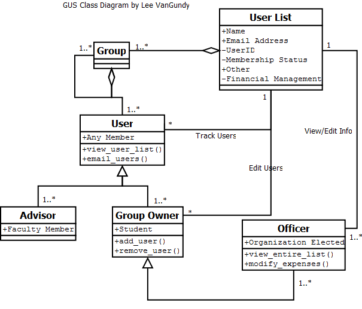

Lee's Class Diagram  Groups: Can have multiple subgroups User List: Contains information about users who are a member of a group. This could either be one user list or multiple for any sub-groups. User: Any member of the group. They can lookup who is in the group and send emails to the group. Group Owner: Owner of the group. Can perform administrative tasks such as adding or removing a user from a group's user list Officer: Special type of group owner that can view any private data from the user list along with anything that a group owner and User to do. Advisor: Faculty member to the organization who has the same abilities as a user. Requirements that I found from the ACM: The ACM's major requirement is in regards to book keeping. Being able to have a mechanism to keep track of members information such as a user list. More specifically there will need to be able to add different entries to this rather than being constrained to a certain set of values. Likely entries include, but should not be limited to: Name, Email address, Membership status, and UserID. I pulled information from my own experience as an ACM officer (VP) as well as from fellow and past officers .